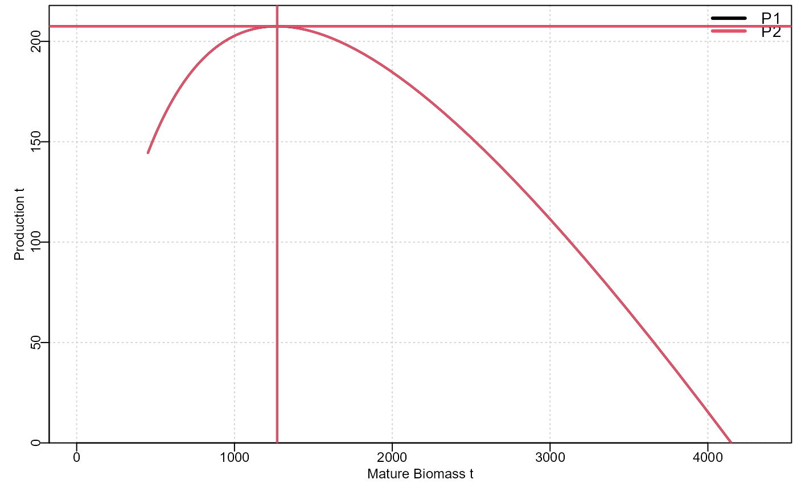

plotprod graphs a selected productivity variable from the choice of ExB exploitable biomass, MatB mature of spawning biomass = Bmsy, AnnH the actual annual harvest rate Hmsy, Catch the yield at Bmsy and Hmsy = MSY, Deplet the mature biomass depletion level, and RelCE the relative cpue at MSY
plotprod(
product,
xname = "MatB",
yname = "Catch",
xlimit = NA,
xlab = "Mature Biomass t",
ylab = "Production t",
font = 7,
filename = "",
devoff = FALSE
)the output from doproduction
the name of the productivity variable for the x-axis, defaults to MatB
the name of the y-xis variable, default=Catch=Yield
default=NA, enables the range of the x-axis to be constrained, for example using xlimit=c(0.15,0.4)
the x-axis label, default=""
the y-axis label, default=""
the type of font used in the plot. default = 7, bold Times, 6 is not bold, 1 is sans-serif, 2 bold sans-serif
the complete path and filename of where to save the png plot file. default is empty, meaning no file is produced.
a boolean to allow the plot device to remain open for the user to add more components. Of course, if this is set to FALSE then it is up to the user to use dev.off
invisibly a list of the x and y matrices plotted
data(zone)
product <- zone$product
plotprod(product)
stat <- findmsy(product)
abline(h=stat[,"Catch"],col=1:6,lwd=2)
abline(v=stat[,"MatB"],col=1:6,lwd=2)

print(stat)
#> ExB MatB AnnH Catch Deplet RelCE index
#> 1 1017.937 1270.521 0.18 207.5093 0.3062615 140.2036 37
#> 2 1017.937 1270.521 0.18 207.5093 0.3062616 140.2036 37